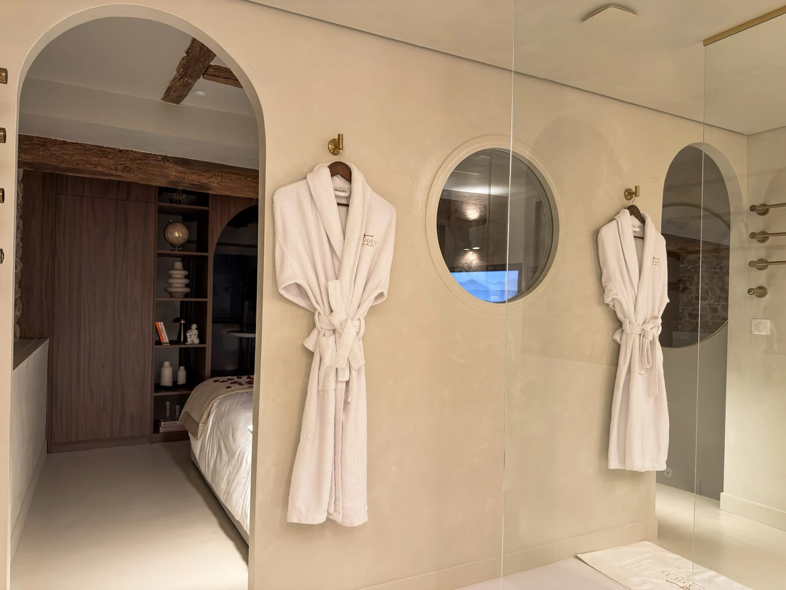

Spa privatif et grossesse
ce qu'il faut savoir avant de réserver
C'est une question que l'on nous pose régulièrement, souvent pour une dernière escapade à deux avant l'arrivée de bébé : peut-on profiter du bain à remous enceinte ? Voici ce que recommandent les professionnels de santé, et comment adapter votre séjour.

On y pense rarement avant d'être concerné : un séjour réservé plusieurs mois à l'avance, et une grossesse qui s'annonce entre-temps. La question du bain à remous revient alors naturellement. Nous préférons y répondre avec prudence plutôt que de laisser croire qu'il n'y a rien à vérifier.
Ce que recommandent les professionnels de santé
Les avis varient selon les sources, mais une tendance générale se dégage : l'immersion prolongée dans une eau chaude est à éviter au premier et au troisième trimestre, et ne s'envisage, au deuxième trimestre, qu'avec l'accord de votre médecin ou de votre sage-femme. Quand elle est autorisée, la baignade se fait généralement dans une eau autour de 37°C, sur une durée courte (de l'ordre de dix à vingt minutes), et avec des jets modérés — les jets puissants pouvant être inconfortables ou déconseillés selon votre état.
Ces repères sont donnés à titre indicatif : ils ne remplacent pas l'avis d'un professionnel de santé, seul en mesure d'évaluer votre situation. Si vous avez un doute, la bonne démarche est d'en parler à votre médecin ou votre sage-femme avant votre séjour, et non de trancher seul·e sur place.
Profiter du séjour, même sans s'immerger dans le bain à remous
La baignoire n'est pas la seule raison de venir. Notre suite tient aussi à la voûte de pierre, à la chambre, à la douche sensorielle et à la pièce secrète — autant d'éléments du séjour qui n'ont rien à voir avec l'eau chaude. Beaucoup de couples viennent avant tout pour le changement de décor et le calme, et utilisent la baignoire comme une option parmi d'autres, pas comme le centre du séjour.
Une baignoire de balnéothérapie peut par ailleurs s'utiliser jets coupés, comme un bain classique : c'est souvent la façon la plus simple de profiter du moment sans les turbulences, à condition de rester sur une eau tempérée plutôt que chaude.
Prévenir avant votre arrivée
L'arrivée dans la suite est autonome, sans accueil en personne. Si vous avez des questions pratiques avant votre séjour — sur la baignoire ou sur autre chose — le plus simple est de nous écrire en amont par WhatsApp ou par e-mail : nous répondons volontiers avant votre arrivée plutôt que de vous laisser découvrir les choses sur place. Voir le logement et les disponibilités.
Questions fréquentes
Peut-on utiliser le bain à remous privatif enceinte ?
Cela dépend du trimestre et de votre état de santé : c'est votre médecin ou votre sage-femme qui peut vous le confirmer. La plupart des recommandations déconseillent l'immersion prolongée au premier et au troisième trimestre, et suggèrent, avec l'accord du professionnel qui vous suit, une eau autour de 37°C, une séance courte et des jets limités au deuxième trimestre.
Peut-on profiter de la baignoire sans les jets, juste pour un bain tiède ?
Oui. Une baignoire de balnéothérapie peut s'utiliser jets coupés, comme un bain classique. C'est souvent l'option la plus simple pour profiter du moment sans les turbulences, à condition que la température de l'eau reste raisonnable.
Faut-il prévenir avant la réservation si l'on est enceinte ?
Ce n'est pas obligatoire, mais vous pouvez nous écrire avant votre séjour si vous avez des questions pratiques sur le logement : nous répondons volontiers par WhatsApp ou par e-mail.
La suite a-t-elle un intérêt même sans utiliser le bain à remous ?
Oui : la voûte de pierre, la chambre, la douche sensorielle et la pièce secrète font partie du séjour au même titre que la baignoire. Beaucoup de couples viennent avant tout pour la tranquillité et le changement de décor.

La Voûte des Sens
Une voûte de pierre,
deux personnes.
Balnéo privative, douche sensorielle et pièce secrète, à Villefranche-sur-Saône, à 40 minutes de Lyon. 5,0/5 sur 20 commentaires.